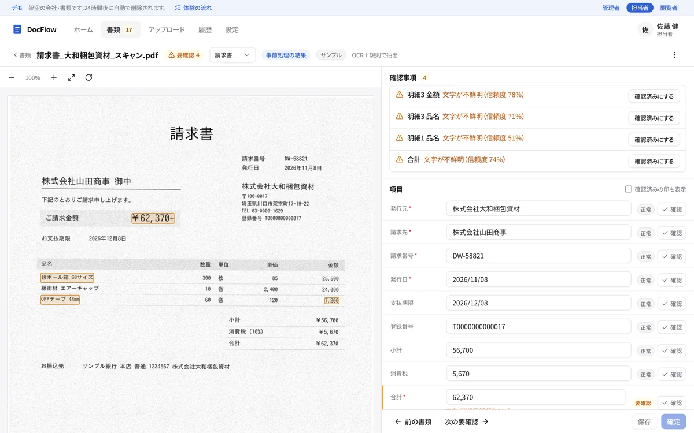
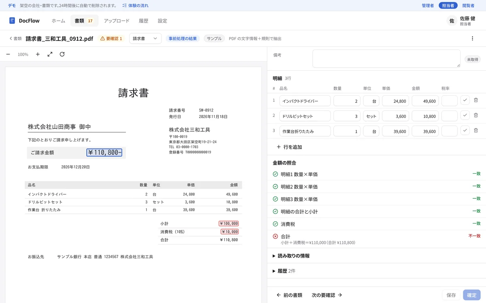
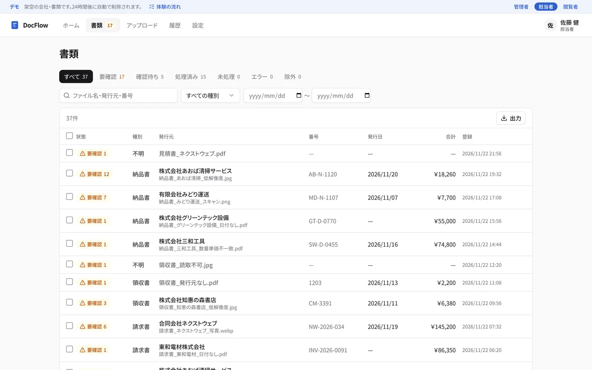
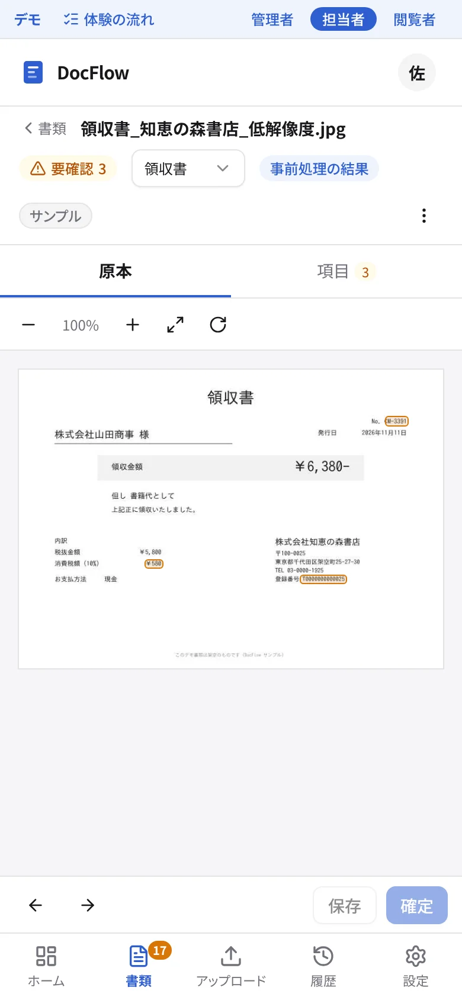
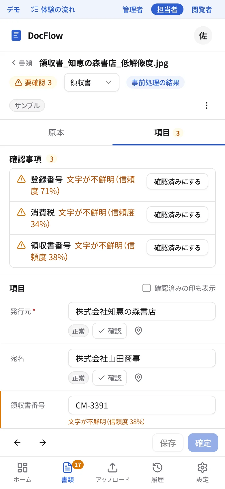

DocFlow
請求書・領収書・納品書を読み取り、確認が必要な項目だけを原本の上に示す帳票・書類処理システムです。
- Client
- 取引先から届く請求書・領収書・納品書を手で入力している中小企業（経理・総務・購買）
- Users
- 管理者・担当者・閲覧者
（PC・スマートフォン） - Demo
- 登録不要。訪問者ごとに
専用のデモ会社を作成

プロジェクト概要
PDF やスキャン画像の請求書・領収書・納品書から、発行元・番号・日付・金額・明細を読み取り、確認が必要な項目だけを原本の位置に印を付けて示す、中小企業向けの帳票・書類処理システムです。人が確認して確定した値だけを Excel・CSV に出力します。
読み取れない項目は推測で埋めず、空欄のまま「未取得」と示します。読み取りに自信がない項目は黄色、金額の計算が合わない項目は赤で示し、確認事項が残っている書類は確定できません。読み取りの結果をそのまま信じず、人が確かめることを前提に設計しています。
想定した業務課題
- 届いた請求書を、会計ソフトや Excel に1件ずつ手で入力している
- OCR や AI で読み取っても、結局すべての項目を原本と見比べている
- 金額の検算（数量×単価・小計・消費税）に時間がかかる
- 同じ請求書を二重に計上しそうになる
- だれが・いつ・どの値を直したのか、後から分からない
解決方法
- PDF・スキャン画像をまとめてアップロードすると、PDF は文字情報、画像は OCR で読み取り、種別（請求書・領収書・納品書）を判定して項目を入力欄に入れておきます。
- 読み取りに自信がない項目は黄色、計算が合わない項目は赤で、原本の位置に印を付けます。項目を押すと原本のその位置へ、原本の印を押すと項目へ移動します。
- 数量×単価・明細の合計・税率ごとの消費税・合計を自動で照合します。値が足りず確かめられないときは「検証不能」と示します。
- 同じファイル・同じ番号・発行日と金額が同じ書類を重複の候補として示し、自動では消さずに人が判断します。
- 修正前後の値・承認の理由・確定した人と日時を履歴に残し、確定したときの値を保存します。
導入効果の試算
書類が月300件（1件あたり約5分の手作業）の会社を想定（アプリの紹介ページの試算と同じ条件で、合計は月25時間 → 月8時間）。人件費の時間単価 2,500円（経理の担当者）は、このページで置いた想定です。
- 削減できる作業時間
- 月 17時間月 25時間 → 月 8時間
- 年間の削減時間
- 204時間月 17時間 × 12か月
- 人件費に換算すると
- 約51万円 / 年月 約4.3万円（時間単価 2,500円）
| 作業（1か月あたり） | 導入前 | 導入後 | 削減 |
|---|---|---|---|
| 書類の仕分け・ファイル名の整理種類ごとにフォルダへ分けて名前を付け直す → アップロードすると種別を判定し、発行元・番号で検索できる | 3時間 | 0.5時間 | −2.5時間 |
| 項目の入力原本を見ながら会計ソフト・Excel に手で入力 → 読み取った値を確認し、違うところだけ直して Excel・CSV に出力 | 15時間 | 4時間 | −11時間 |
| 金額の検算電卓で数量×単価・消費税を計算 → 自動の照合で、合わない箇所だけを確認 | 4時間 | 1.5時間 | −2.5時間 |
| 重複・漏れの確認過去の書類を探して目で確認 → 重複の候補を見て「重複として除外」か「重複ではない」を選ぶ | 3時間 | 2時間 | −1時間 |
| 合計 | 25時間 | 8時間 | −17時間 |
※ 実際の導入実績ではなく、上の想定条件にもとづく試算です。実際の効果は、書類の種類・画質や運用によって変わります。読み取りは間違えることがあるため、どの書類も人が確認して確定する前提です。
主要機能
- 読み取り
- PDF の文字と位置、画像・スキャンは OCR（サーバーの中で処理し、外部に送らない）。種別を判定し、読めない項目は推測で埋めず空欄のまま示す。
- 確認画面
- 左に原本（拡大・回転・複数ページ）、右に確認事項・項目・明細・金額の照合。項目と原本の位置が連動し、スマホは「原本／項目」のタブで切り替える。
- 金額の照合
- 数量×単価・明細の合計・税率ごとの消費税（8%・10% の混在、値引き・送料）・合計を照合し、一致／不一致／検証不能で示す。
- 重複の検出
- 同じファイル・同じ番号・同じ発行日と金額の書類を候補として表示。自動では消さず、人が判断する。
- 確定・履歴・出力
- 確認事項が残る書類は確定できない。確定時の値と修正の履歴を記録し、Excel（種別ごとのシート＋明細）と CSV に出力。
- 役割と権限
- 管理者・担当者・閲覧者。担当者が確定できる金額の上限や、要確認にする信頼度を設定で変えられる。
スクリーンショット




使用技術
- Next.js 16（App Router・Server Actions）
- React 19
- TypeScript
- PostgreSQL 16（Neon）
- Tailwind CSS 4
- Radix UI
- pdf.js
- Tesseract.js（OCR）
- sharp
- ExcelJS
- React Hook Form・Zod
- Vitest
- Playwright
- Vercel
- 書類の値の変更と確定はデータベースの関数だけが行い、版番号で同時編集による上書きを防ぎます。確定の条件（未確認の確認事項・重複の判断・担当者の金額の上限）もデータベース側で確かめます。
- 会社ごとのデータは PostgreSQL の行レベルセキュリティ（RLS）で分け、ファイルは非公開の領域に置いて、権限のある人にだけ返します。スクリプトや添付ファイルを含む PDF、展開すると巨大になる画像は受け付けません。
- 外部の AI（Claude API）での項目の取り出しは任意で、既定はオフです。使う場合も原本の文字に根拠のある値だけを採用し、口座番号・電話番号は伏せて送ります。
- 架空のデモ書類 37 件で精度を実測しています。文字情報のある PDF の見出しの項目は 220 / 220、スキャン画像・写真は 85 / 99（ピンぼけで読めない画像 1 件を含む）、書かれていない値を埋めた件数は 0 です。
デモ・ソースコード
登録は不要です。紹介ページの「デモを試す」、またはログイン画面で役割（管理者・担当者・閲覧者）を選ぶと、訪問者ごとに専用のデモ会社（架空の会社「株式会社山田商事」と、取引先の架空の書類 37 件）が作られ、24時間後に自動で削除されます。デモの書類は事前に読み取った結果で、デモでアップロードした書類はその場で読み取ります。画面上部の「体験の流れ」から、要確認の書類を開く → 原本と見比べて直す → 確定 → 出力 までを3〜5分で辿れます。